조경기사 (2010-09-05 기출문제)
1과목: 조경사
1. 페르시아의 도로공원의 원형(原型)이라고 볼 수 있는 것은?
- 니샤트 바
- 샬리마르 바
- 체하르 바
- 호프 바
(정답률: 73%)

2. 창덕궁 내 천정(泉井)이 아닌 것은?
- 마니(摩尼)
- 파리(坡璃)
- 몽천(蒙泉)
- 옥정(玉井)
(정답률: 75%)
3. 알함브라 궁전의 파티오에 대한 설명 중 옳지 않은 것은?
- 사자의 중정은 중앙에 분수를 두고 十자형으로 수로가 흐르게 한 것으로 사적(私的) 공간기능이 강하다.
- 외국 사신을 맞는 공적(公的) 장소에 긴 연못 양편에서 분수가 솟아오르게 한 도금양의 중정이 있다.
- 싸이프레스 중정 혹은 도금양의 중정이란 명칭은 그 중정에 식재된 주된 식물의 명칭에서 유래하였다.
- 파티오에 사용된 물은 거울과 같은 반영미(反映美)를 꾀하거나 혹은 청각적인 효과를 도모하되 소량의 물로서 최대의 효과를 노렸다.
(정답률: 74%)
4. 불국사의 구품연지(九品蓮池)의 형태로 가장 적합한 것은?
- 타원형
- 정방형
- 장방형
- 사다리꼴형
(정답률: 53%)
5. 로마 시대에는 정원을 무엇이라 지칭하였는가?
- 호르투스
- 콜루엘리
- 아도니스원
- 타블리니웅
(정답률: 75%)
6. 현재 “북해공원”이라 불리는 것은 다음 중 어느 곳과 가장 관련이 있는가?
- 경림원
- 원명원
- 이화원
- 서원
(정답률: 53%)
7. 앙드레 르 노트르가 창안한 프랑스 고유의 정원 양식이라고 할 수 있는 평면기하학식 정원이 아닌 것은?
- 프랑스 쁘띠트리아농(Petit Trianon)의 정원
- 독일의 남펜버그(Nymphenburg)의 정원
- 오스트리아의 쉔브룬(Schonbrunn) 성의 정원
- 오스트리아의 벨베데레(Belvedere) 정원
(정답률: 68%)
8. 서원에서 춘추제향시 제물로 쓰이는 짐승을 세워놓고 품평을 하기 위해 만든 곳은?
- 관세대(盥洗臺)
- 정료대(庭燎臺)
- 사대(社臺)
- 생단(牲壇)
(정답률: 86%)
9. 일본 예도시대 전기의 화유식정원으로 수학원이궁과 함께 교토 명원의 쌍벽을 이루는 정원은?
- 육의원
- 율림공원
- 계리궁
- 소석천 후락원
(정답률: 70%)
10. 고대 중국 민족은 농경기술을 습득하는 한편 제왕이나 귀족들이 산림지대에서 사냥을 즐기는 풍습이 있었고, 주나라 때는 예수부근에 도읍을 정하고 처음 정원을 만들었는데 그 명칭으로 가장 적합한 것은?
- 경원
- 이궁
- 영대
- 채원
(정답률: 67%)
11. 이슬람 사원(Mosque)의 주축 방향 지향적 특징은?
- 주변 환경에 조화되게 한다.
- 기도방향인 메카 쪽을 향한다.
- 도로 방향과 수평되게 한다.
- 그 지역의 자연환경에 따른다.
(정답률: 85%)
12. 조선시대 상류주택의 사랑마당에 관련된 사항이 아닌 것은?
- 괴석이나 경석을 도입
- 담장 밑 화오에 초화류와 낙엽수를 식재
- 석연지나 들확 및 수구를 도입
- 현세적 가치 기준에 따라 대나무 식재
(정답률: 64%)
13. 중국의 고건축에서 주로 물가에 도입되어 수경관을 감상하며 구조가 경쾌하고 입면이 개방적인 조영물의 명칭은?
- 각(閣)
- 누(樓)
- 정(亭)
- 사(獅)
(정답률: 46%)
14. 윤선도가 보길도에 조영한 부용동원림과 관련이 없는 것은?
- 낭음계, 동천석실, 세연정
- 낙서재, 소은병, 귀암
- 무민당, 곡수대, 정성암
- 애양단, 대봉대, 탑암
(정답률: 62%)
15. 고려의 충숙왕이 원나라에서 돌아올 때 진기한 화초를 많이 가져왔다고 기록하고 있는 문헌은?
- 강희안의 양화소록
- 신경준의 순원화훼잡설
- 이규보의 동국이상국집
- 홍만선의 산림경제
(정답률: 62%)
16. 인도 무굴제국의 정원에 관한 설명 중 옳은 것은?
- 이슬람교가 동진하여 전파한 이슬람 정원이어서 힌두족의 전통은 나타나지 않는다.
- 기후, 식생 등 조건이 정원발달을 저해함으로써, 자연히 페르시아 이슬람정원들보다 소규모의 정원이다.
- 지역적으로 볼 때 아그라와 델리에는 아크바르대제의 능묘가, 캐시미르에는 샬리마르 바(Shalimar Bagh), 타지마할이 있다.
- 무굴정원의 유형은 별장을 중심으로 발달한 바(Bagh)와 정원과 묘지를 결합한 형태의 것으로 나누어지고 산간 지방에는 노단식이, 평지에는 평탄원이 발달했다.
(정답률: 73%)
17. 중국의 사기정원 가운데 “해당화가 심겨져 있는 봄 언덕(해당춘오 : 海棠春塢)”라는 정원이 그림과 같이 꾸며진 곳은?
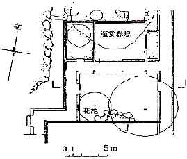
- 유원
- 사림지
- 창량정
- 졸정원
(정답률: 88%)
18. 일본정원에서 서방사경원(西芳寺景園) 지안 근처의 못 속에 같은 크기와 모양의 암석을 질서 있게 배치한 것으로 정토사상을 배경으로 보물을 실어 나가거나, 싣고 들어오는 선박을 상징하는 것은?
- 쓰꾸바이
- 야리미즈
- 비석
- 야박석
(정답률: 80%)
19. 자연을 미적으로 묘사하는 것은 회화이고 자연의 산물을 미적으로 배합하는 것은 정원술이라고 주장한 사람은?
- Christian Hirshfeld
- Imanuel Kant
- Johan Wolfgang Von Goethe
- Humphty Repton
(정답률: 58%)
20. 로마시대 주택의 축선상에 놓인 공간의 배열이 맞는 것은?
- 도로→출입구→Atrium→Peristyle→Xystus
- 도로→출입구→Atrium→Xystus→Peristyle
- 도로→출입구→Peristyle→Atrium→Xystus
- 도로→Xystus→Peristyle→출입구→Atrium
(정답률: 87%)
2과목: 조경계획
21. 도시관리계획 결정이 고시된 경우, 특별시장, 광역시장, 시장 또는 군수가 지적이 표시된 지형도에 도시관리계획 사항을 명시한 도면을 작성하는 기준 축척은? (단, 녹지지역안의 임야, 관리지역, 농림지역 및 자연환경보전지역의 경우는 고려하지 않는다.)
- 1/300 내지 1/600
- 1/500 내지 1/1500
- 1/3000 내지 1/6000
- 1/10000 내지 1/25000
(정답률: 69%)
22. 미적 반응(aesthetic response) 과정이 올바른 것은?
- 자극선택→자극탐구→반응→자극해석
- 자극선택→자극탐구→자극해석→반응
- 자극탐구→자극선택→반응→자극해석
- 자극탐구→자극선택→자극해석→반응
(정답률: 68%)
23. 일반적인 설계의 개념 짓기 순서가 옳게 나열된 것은?
- 개념의 형성→관념의 인식→아이디어 만들기 →개념적 시나리오 작성
- 아이디어 만들기→개념적 시나리오 작성→관념의 인식→개념의 형성
- 관념의 인식→아이디어 만들기→개념의 형성 →개념적 시나리오 작성
- 개념적 시나리오 작성→아이디어 만들기→관념의 인식→개념의 형성
(정답률: 50%)
24. 자연보존지구에서 허용되는 최소한의 공원시설 및 공원사업 규모 기준으로 틀린 것은?(단, 자연공원법 시행령의 기준을 적용한다.)
- 공공시설로서 관리사무소 : 부지면적 2천 제곱미터 이하
- 조경시설 : 부지면적 4천 제곱미터 이하
- 공공시설로서 탐방안내소 : 부지면적 4천 제곱미터 이하
- 휴양 및 편익시설로서 전망대 : 부지면적 4백 제곱미터 이하
(정답률: 46%)
25. 특정 대상이 지닌 의미를 파악하고자 할 때 여러 단어로 구성된 목록을 통해 자신들이 느끼는 감정의 정도를 측정하는 방법은?
- 직접관찰
- 물리적 흔적관찰
- 어의구분척도
- 리커드 태도 척도
(정답률: 62%)
26. 프로젝트의 개략적인 골격, 토지이용과 동선체계, 각종 시설 및 녹지의 위치 등을 정하는 조경계획의 과정은?
- 기본계획
- 기본설계
- 실시설계
- 기본전개
(정답률: 69%)
27. 다음 S.Gold가 구분한 레크리에이션 계획 접근방법 중 맥하기(lan McHarg)가 주장하는 생태학적 결정론과 가장 관련 깊은 접근방법은?
- 자원접근(Resource approach)
- 행위접근(Activity approach)
- 행태접근(Behavioral approach)
- 경제적 접근(Economic approach)
(정답률: 52%)
28. 인간 행동의 움직임을 부호화한 표시법(motation symbols)을 창안하여 설계에 응용한 사람은?
- Laurence Halprin
- Philip Thiel
- lan L.McHarg
- Christopher J.Jones
(정답률: 74%)
29. 보행자도로와 차도를 동일한 공간에 설치하고 보행자의 안전성을 향상하는 동시에 주거환경을 개선하기 위하여 차량통행을 억제하는 여러가지 기법을 도입하는 방식은?
- 보차분리방식
- 보차병행방식
- 보차공존방식
- 보차혼용방식
(정답률: 43%)
30. 건축법에는 지역의 환경을 쾌적하게 조성하기 위하여 일정 용도 및 규모의 건축물은 휴식시설 등의 공간을 설치하여야 한다고 규정하고 있다. 이렇게 설치되는 공간을 가리키는 것은?
- 공개공지
- 공공공지
- 보존공지
- 휴게공지
(정답률: 59%)
31. 도시계획 수립 대상지역이 일부에 대하여 토지이용을 합리화하고 그 기능을 증진시키며 미관을 개선하고 양호한 환경을 확보하며, 그 지역을 체계적, 계획적으로 관리하기 위하여 수립하는 도시관리계획을 무엇이라 하는가?
- 광역도시계획
- 도시재정비계획
- 지구단위계획
- 상세도시계획
(정답률: 74%)
32. 레크리에이션 계획 중 표출수요에 대한 설명으로 맞는 것은?
- 본래 내재하는 수요이지만 기존의 시설을 이용할 때만 반영되어 나타나는 수요를 말한다.
- 기존의 레크리에이션 기회에 참여 또는 소비하고 있는 이용을 말한다.
- 사람들로 하여금 레크리에이션 패턴을 변경하도록 고무시켜 개발하는 수요를 말한다.
- 특히 선호하는 레크리에이션 대한 수요를 말한다.
(정답률: 72%)
33. 토지이용계획의 기초가 되는 적지분석을 할 경우의 고려사항과 가장 거리가 먼 것은?
- 토양의 적정성
- 설계의 질적 수준
- 주변교통관계 및 접근성
- 경관적 특성
(정답률: 77%)
34. 도시공원 및 녹지 등에 관한 법률 및 동법 시행규칙에서 정의한 공원시설이 아닌 것은?
- 매점, 화장실 등의 이용자를 위한 편익시설
- 야외사격장, 골프장(9홀) 등의 운동시설
- 관리사무소, 울타리 등의 공원관리시설
- 박물관, 야외음악당 등의 교양시설
(정답률: 60%)
35. 주거지역에 위치한 10000m2 의 대지에 신축 공장을 건폐율 40%의 3층 건물로 건축하였다. 건축법 시행령에 의거한 최소 조경면적은? (단, 해당 지방자치단체의 조례에서 정한 기준은 연면적 합계가 2000m2 이상은 대지면적의 10%로 한다.)
- 500m2
- 1000m2
- 1500m2
- 2000m2
(정답률: 65%)
36. 국토의 계획 및 이용에 관한 법률상이 용도지구에 관한 설명으로 적합하지 않는 것은?
- 용도지구는 도시계획구역 전체를 대상으로 하여 지정된다.
- 토지의 이용 및 건축물의 용도, 건폐율, 용적률, 높이 등에 대한 용도지역의 제한을 강화 또는 완화하여 적용함으로써 용도지역의 기능을 증진 시키고 미관, 경관, 안전 등을 도모하기 위하여 도시관리계획으로 결정하는 지역을 말한다.
- 하나의 대지가 둘 이상의 용도지구에 거치는 경우 그 대지 중 용도지구에 있는 부분의 규모가 대통령령으로 정하는 규모 이하인 토지 부분에 대하여는 그 대지 중 가장 넓은 면적이 속하는 용도지구에 관한 규정을 적용한다.
- 용도지구에서의 건축물이나 그 밖의 시설의 용도, 종류 및 규모 등의 제한을 위반하여 건축물을 건축한 경우 2년 이하의 징역 또는 2천만원 이하의 벌금에 처한다.
(정답률: 39%)
37. 토지이용계획에 관한 설명 중 옳지 않은 것은?
- 계획구역내의 토지를 계획, 설계의 기본목표 및 기본구성에 부합되도록 구분하고 용도를 지정하는 것이다.
- 토지가 지니고 있는 본래의 잠재력이 기본적 고려사항이 된다.
- 이용행위의 기능적 특성을 고려한 행위 상호간의 관련성에 따라서 토지이용이 구분된다.
- 적지분석은 토지의 잠재력과 사회적 수요에 기초하여 각 용도별로 행해지므로 동일지역이 몇 개의 용도에 적합한 경우는 없다.
(정답률: 77%)
38. 설계방법론 중 직관적 방법에 대한 설명으로 적합한 것은?
- 논리적 절차에 의한 방법이다.
- 유리상자 또는 컴퓨터 방법에 비유된다.
- 전략과 목표를 융합한 방법이다.
- 설계가의 개인적 방법이다.
(정답률: 63%)
39. 도시공원 및 녹지 등에 관한 법률 시행령에서 도시자연공원구역 안의 행위허가의 세부기준으로 틀린 것은?
- 건폐율은 100분의 20 이내로 하고, 용적률은 100퍼센트 이내로 한다.
- 높이는 최대 12미터, 3층 이하로 하고, 주변 미관과 조화를 이루어야 한다.
- 도시자연공원구역 안에 행위 허가된 시설의 부지면적은 전체 도시자연공원 구역면적(취락지구와 공공용시설을 제외한 면적을 말한다)의 10퍼센트를 초과할 수 없다.
- 건축물 또는 공작물 중 기반시설로서 건축 연면적이 1천 500제곱미터 이상은 국토의 계획 및 이용에 관한 법률 시행령 제35조의 규정에 불구하고 도시계획시설로 설치하도록 하여야 한다.
(정답률: 54%)
40. 다음 중 식생군락조사를 위한 군락측도 방법중 정성적 측도에 해당되는 것은?
- 빈도(frequency)
- 밀도(density)
- 군도(sociability)
- 우점도(dominance)
(정답률: 47%)
3과목: 조경설계
41. 색채의 조화와 부조화를 쾌적한 간격(pleasing interval)과 불쾌한 간격(displeasing interval)으로 구부 이를 색공간 속에 좌표로서 표시해 놓은 사람은 다음 중 누구인가?
- Moon Spencer
- Ostwald
- Munsell
- Hering
(정답률: 57%)
42. 리듬(rhythm) 구성의 한 방법이 될 수 없는 것은?
- 반복(repetition)
- 점이(gradation)
- 대칭(symmetry)
- 파형(flowing)
(정답률: 60%)
43. 형광등 아래서 물건을 고를 때 외부로 나가면 어떤 색으로 보일까 망설이게 된다. 이처럼 조명광에 의하여 물체의 색을 결정하는 광원의 성질은?
- 색온도
- 발광성
- 연색성
- 색순응
(정답률: 71%)
44. 린치(K. Lynch)의 도시 이미지 연구와 가장 관련이 깊은 의미를 지닌 용어는?
- 식별성(legibility
- 투과성(transparency)
- 복잡성(complexity)
- 흡수성(absorption)
(정답률: 67%)
45. 실제 길이 3m는 축척 1/30 도면에서 얼마로 나타나는가?
- 0.1cm
- 1cm
- 10cm
- 100cm
(정답률: 70%)
46. Litton의 산림경관을 분석하는데 사용한 파노라믹 경관(panoramic landscape)의 설명으로 틀린 것은?
- 전경, 중경, 원경의 수평적 구도가 쉽게 식별 된다.
- 앞에 가로막는 것이 없는 탁 트인 전망이다.
- 높은 산에 올라가면 많이 볼 수 있는 경관이다.
- 시야의 거리감이 없다.
(정답률: 47%)
47. 자전거도로의 종단구배에 따른 제한길이는 「자전거이용시설의 구조, 시설기준에 관한 규칙」에 의해 규정하고 있다. 종단구배가 5%일 때는 최대 제한길이(m)는? (단, 지형상황 등으로 인하여 부득이 하다고 인정하는 경우는 고려하지 않는다.)(관련 규정 개정전 문제로 여기서는 기존 정답인 3번을 누르면 정답 처리됩니다. 자세한 내용은 해설을 참고하세요.)
- 90m
- 120m
- 160m
- 220m
(정답률: 68%)
48. 다음 중 색입체에 관한 설명으로 틀린 것은?
- 색입체의 중심축은 무채색 축이다.
- 오스트발트 표색계의 색입체는 타원과 같은 형태이다.
- 색의 3속성을 3차원 공간에다 계통적으로 배열한 것이다.
- 먼셀표색계의 색입체는 나무의 형태를 닮아 color tree라고 한다.
(정답률: 62%)
49. 다음의 조경 시설물 설계기준에 대한 설명중 틀린 것은?
- 안전난간의 높이는 바닥의 마감면으로부터 110cm 이상으로 한다.
- 단주(볼리드)의 배치간격은 3m를 기준으로 하여 차량의 진입을 막을 수 있도록 설계한다.
- 설계대상공간에 대한 적극적 침입방지기능을 요하는 울타리의 높이는 1.5~2.1m로 설계한다.
- 쓰레기통은 각 단위공간의 의자 등 휴게시설에 근접시키되 보행에 방해가 되지 않아야 하며 단위공간마다 1개소 이상 배치한다.
(정답률: 58%)
50. 먼셀(Munsel)의 색상환에서 주요 5색상에 해당되지 않는 것은?
- blue
- purple
- orange
- green
(정답률: 73%)
51. 제도에서 치수의 기입 방법 설명 중 옳지 않은 것은?(단, KS A 01113 기준으로 한다.)
- 치수를 기입할 여백이 없을 때에는 치수 보조선을 그어 그 위에 기입한다.
- 세로의 치수는 치수선의 왼쪽에서 아래로부터 위로 읽을 수 있도록 기입한다.
- 가로의 치수는 왼쪽에서 오른족으로 읽을 수 있도록 치수선의 윗 부분에 기입한다.
- 치수는 중복을 피하고 계산하지 않고도 알 수 있도록 기입한다.
(정답률: 44%)
52. 무수히 많은 색 차이를 볼 수 있는 것은 어떤 시세포의 작용에 의한 것인가?
- 간상체
- 추상체
- 수평세포
- 양극세포
(정답률: 68%)
53. 시가지에 위치한 둘러싸인 대지의 시각적 특성으로 적합하지 않은 것은?
- 주변의 건물이 시각적으로 압박요소로 작용한다.
- 주변도로로부터 각종 공해요소의 영향을 받는 다.
- 미기후적으로 교외의 대지보다 변화가 적고 온화하다.
- 대지내의 수목 등 자연적 요소는 경관적 가치가 크다.
(정답률: 74%)
54. 교통표지나 광고물 등에 사용될 색을 선정할 때 우선적으로 고려해야 할 점은?
- 색의 원근감
- 색의 명시성
- 색의 수축성
- 색의 온도감
(정답률: 84%)
55. 경관의 우세요소(優勢要素)들은 다음 8가지 인자(因子)에 의하여 변화되며 이를 변화요인(variable factors)이라 한다. 다음 중 경관의 변화 요인으로만 구성된 것은?
- 운동, 광선, 거리, 위치, 규모, 시간, 질감, 색감
- 명암, 규모, 위치, 공간, 색채, 질감, 거리, 축(軸)
- 운동, 광선, 기후조건, 계절, 거리, 관찰위치, 규모, 시간
- 광선, 속도, 거리, 사람의 위치, 시간, 규모, 형태, 색감
(정답률: 54%)
56. 트랜식(R. Trancik. Finding Lost Space)의 도와 지이론(Figure-ground Theory)의 설명으로 가장 적합하지 않은 것은?
- 건물매스를 도(Figure)로 보고 그 주위공간을 지 (Ground 또는 Viods)로 본다.
- 건물매스가 일정한 크기로 균일하게 분포되어 있을 때를 가장 합리적인 상태로 본다.
- 도시환경 연구에서는 평면적이고 정적인 경우에만 국한되고 있다.
- 지(Ground 또는 Voids)는 주위건물 매스의 성격에 따라 다양한 의미를 갖는다.
(정답률: 32%)
57. 다음 정면도와 우측면도에 알맞은 평면도로 가장 적합한 것은?
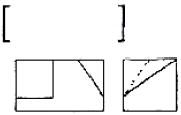
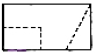
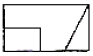
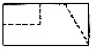
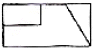
(정답률: 62%)
58. 조경공간의 휴게 목적으로 사용되는 그늘시렁, 그늘막 정자 등 시설에 사용되는 기둥이나 보의 단면형태를 설명한 것 중 틀린 것은?
- 목재 보의 단면은 폭과 높이의 비를 1/1.5~1/2 한다.
- 기둥의 좌굴계수(재료의 허용압축응력×단면적/압축력)는 2를 적용한다.
- 기둥의 세장비(좌굴장/최소단면 2차 반경)는 150 이하를 적용한다.
- 단면계수 산식은 가로길이×높이의 제곱/2를 적용한다.
(정답률: 48%)
59. 투상도의 종류 중 X, Y, Z의 기본 축이 120° 씩 화면으로 나누어 표시되는 것은?
- 등각투상도
- 이등각투상도
- 부등각투상도
- 유각투시도
(정답률: 78%)
60. 다음 선의 종류와 용도에 관한 설명 중 틀린것은?
- 실선은 물체가 보이는 부분을 나타내는 선이다.
- 파선은 물체가 보이지 않는 모양을 표시할 때 쓰이는 선이다.
- 일점쇄선은 물체의 중심축, 대칭축을 나타내는 선이다.
- 이점쇄선은 물체의 절단한 위치 및 경계를 표시하는 선이다.
(정답률: 71%)
4과목: 조경식재
61. 전방을 주시하며 달리고 있는 차량 운전자로부터 측방에 위치한 쓰레기 매립지를 차폐하여 뚜렷하게 보이지 않게 할 수 있는 열식수(列植樹)의 최대 간격은?
- 수관반경의 3배
- 수관반경의 2배
- 수관직경의 3배
- 수관직경의 2배
(정답률: 54%)
62. A조사구는 25종, B조사구는 34종의 식물이 출현하였고 A,B 조사구에 공통으로 출현한 종수가 16종이라고 한다면 군집의 유사성을 나타내는 Sorenson 지수 S는?
- 0.27
- 0.40
- 0.54
- 0.67
(정답률: 56%)
63. 다음 중 한 곳에서 잎이 3개씩 모여 나고, 잎의 길이는 7~14cm 정도이며 딱딱하고 비틀리는 것으로 사방조림용으로 많이 사용되는 수종으로 가장 적합한 것은?
- Pinus strobus
- Pinus banksiana
- Pinus koraiensis
- Pinus rigida
(정답률: 65%)
64. 수목규격의 측정기준 중 틀린 것은?
- 수관폭 : 수관 투영면 양단의 직선거리
- 수고 : 지표면에서 수관 정상까지의 수직거리
- 근원직경 : 지표면에서 1.2m 부위의 수간의 직경
- 지하고 : 수간 최하단부의 돌출된 줄기에서 지표면까지의 수직거리
(정답률: 72%)
65. 다음 중 소사나무에 해당하는 속명인 것은?
- Alnus
- Carpinus
- Celtis
- Quercus
(정답률: 63%)
66. 경관 및 식생 등의 군락을 관리하기 위한 방법은 천이를 억제하는 방법과 천이를 조장하거나 가속화시키는 방법으로 구분할 수 있다. 다음 중 천이의 진행을 억제하고자 할 경우에 해당하는 것은?
- 성장에 있어 많은 광선을 필요로 하는 희귀종의 서식처를 보호하기 위한 경우
- 녹음, 방풍과 같은 특정 기능이 잘 수행될 수 있도록 식물의 성장을 유도하는 경우
- 위요된 곳을 좋아하는 야생동물의 서식처를 제공하고자 하는 경우
- 음지조건을 좋아하는 식물의 서식처를 제공하여 생물 다양성을 증진시키고자 하는 경우
(정답률: 64%)
67. 두 그루 나무를 심을 때 배식의 원리로 틀린것은?
- 양자의 높이 합계보다 양자간의 거리가 클 때는 대립되어 보인다.
- 대립으로 심어도 보는 사람 정점으로 60° 범위 내는 관련되어 보인다.
- 양자의 높이 합계보다 양자간의 거리가 클 때는 관련되어 보인다.
- 관련되게 심어도 색조와 수형이 현저히 다르면 대립으로 느껴진다.
(정답률: 65%)
68. 다음 식물 중 줄기가 녹색이 아닌 수종은?
- Aucuba japonica
- Pinus bungeana
- Firmiana simplex
- Kerria japonica
(정답률: 65%)
69. 여름에 꽃 피는 수종이 아닌 것은?
- Hibiscus syriacus L.
- Hydrangea serrata for. acuminata
- Lagerstroemia indica L.
- Cercis chinensis Bunge
(정답률: 50%)
70. 식물이 생육하는데 필요한 필수원소 중 미량 원소에 해당하는 것이 아닌 것은?
- B, Cu
- Zn, Mo
- Fe, Mn
- Mg, S
(정답률: 64%)
71. 폭우 때와 같은 증수기에 삼림은 일시적으로 물을 저장하고 출수를 억제하는 동시에 갈수기에는 물을 고갈시키지 않고 하천에 일정량의 유량을 유지시키는 갈수 완화작용을 무엇이라 하는가?
- 삼림보존기능
- 수원함양기능
- 삼림방제기능
- 토사유출방지기능
(정답률: 67%)
72. 건축물과 관련된 기초식재로서 잘못된 것은?
- 인공적인 건축선 완화
- 창문 앞에는 햇빛과 바람을 막아줄 수 있는 상록수 식재
- 현관으로의 전망 강조
- 개방 잔디 공간 확보
(정답률: 59%)
73. 해안가에 식재하기 적합하지 않은 수종은?
- Celtis sinensis
- Magnolia obovata
- Ligustrum obtusifolium
- Rosa rugosa
(정답률: 38%)
74. 다음 서양잔디 중 한지형이 아닌 것은?
- Poa pratensis
- Cynodon dactylon
- Agrostis alba
- Lolium perenne
(정답률: 49%)
75. 다음 특성 중 Magnolia sieboldii K. Koch에 관한 내용으로 거리가 먼 것은?
- 상록활엽교목이다.
- 꽃이 아래쪽을 향해 핀다.
- 꽃 색은 흰색이다.
- 산목련이라 불린다.
(정답률: 60%)
76. 단풍나무과 중 잎은 대생하고 우상복엽으로 노랗게 단풍이 들며 생장이 빨라 조기녹화에 적합하고, 내염성이 커 해안지방 조경에 식재가 가능한 수종은?
- Acer negundo
- Acer palmatum
- Acer pseudosieboldianum
- Acer tataricum
(정답률: 63%)
77. 조각물을 강조하기 위한 배경식재에 가장 적합한 질감(texture)을 가지고 있는 수종의 조건은?
- 작은 잎이 조밀하게 밀생하는 수종
- 큰 잎이 넓은 간격으로 소생하는 수종
- 작은 잎이 넓은 간격으로 소생하는 수종
- 잎의 크기나 간격과는 관계가 없다.
(정답률: 73%)
78. 다음 [보기]의 설명에 적합한 수종은?
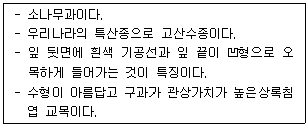
- Taxus cuspidata
- Abies koreana
- Pinus banksiana
- Pinus Korajensis
(정답률: 55%)
79. 다음 중 경관생태학의 관점에서 개체군의 생태와 관련하여 생물종의 손실이 가장 많이 일어난 곳은?
- 고립되고 면적(面的)이 작은 공원 패취(patch)
- 산림과 산림을 연결하는 식생코리더
- 농경지로 이루어진 모자이크(mosaic)
- 도시지역에 넓은 면적을 가진 습지
(정답률: 71%)
80. 브라운 블랑케(Braun Blanquet)는 식물군락의 구성 중에 대해 통계적으로 비교함으로써 구분하는 분류법을 창안하였는데, 이와 관련된 용어의 설명이 틀린 것은?
- 전형(典型, typicum)은 국지적인 우정종을 말한다.
- 표징종(標徵種, character species)은 식물군락을 특정 짓는 종군(種群)을 말한다.
- 식별종(識別種, difference species)은 군집속에서 양적으로 우점하고 있는 종을 말한다.
- 식물의 군락구분은 군집(群集, association)을 기본단위로 한다.
(정답률: 25%)
5과목: 조경시공구조학
81. 그림과 같이 표고가 각각 112m, 142m인 A, B 두 점이 있다. 두 점 사이에 130m의 등고선을 삽입할 때 이 등고선의 위치는 A점으로부
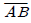
선상 몇 m에 위치하는가? (단, AB의 직선거리는 200m이고, AB구간은 등경사이다.)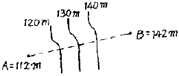
- 120m
- 125m
- 130m
- 135m
(정답률: 49%)
82. AE제, AE강수제 및 고성능 AE강수제를 사용하는 콘크리트의 적정 공기량은 콘크리트 용적 대비 얼마인가?(단, 굵은 골재의 최대치수가 20mm이며, 환경은 간혹 수분과 접촉하여 결빙이 되면서 제빙화학제를 사용하지 않는 경우)
- 7%
- 5%
- 3%
- 1%
(정답률: 47%)
83. 살수(撒水) 시설을 설치할 때 살수량을 결정하는데 필요한 사항이 아닌 것은?
- 토양의 포장용수량
- 식물의 종(種)에 따른 증발산량
- 식물의 분얼(分蘖)촉진 상태
- 토양의 유효수분함량
(정답률: 64%)
84. 다음 옥외조명에 관한 사항으로 옳은 것은?
- 광도(光度)는 단위 면에 수직으로 떨어지는 광속밀도로서 단위는 룩스(lx)를 쓴다.
- 수은등은 고압나트륨등에 비해 2배 이상의 효율을 가지고 있다.
- 도로 조명은 휘도 차에서 오는 눈부심을 줄이기 위해 광원을 멀리한다.
- 교차로에서는 조명등의 높이가 매우 높으며, 간격은 10m 정도가 좋고, 아래의 여러 방향으로 방사하도록 한다.
(정답률: 61%)
85. 평판 측량에서 평판을 세울 때 발생하는 오차 중 다른 오차에 비하여 그 영향이 매우 큰 오차는?
- 거리 오차
- 기울기 오차
- 방향 맞추기 오차
- 중심 맞추기 오차
(정답률: 58%)
86. 다음 중 토공사를 할 경우 주의해야 할 현상으로 가장 거리가 먼 것은?
- 파이핑(piping)
- 보일링(boiling)
- 그라우팅(grouting)
- 히이빙(heaving)
(정답률: 49%)
87. 표준품셈에서 노상 및 노반재료(선택층, 보조기층, 기층 등)로 사용되는 모래의 할증률은 몇 %까지 적용할 수 있는가?
- 3%
- 6%
- 8%
- 10%
(정답률: 43%)
88. 그림과 같이 20t의 힘을 α1= 30°, α2= 40° 의 두 방향으로 분해하여 분력 P1과 P2를 계산한 값은? (단, sin70°= 0.9397, sin40°=0.6428 이다.)
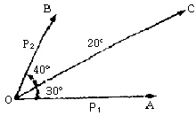
- P1=17.32t, P2=10.00t
- P1=13.68t, P2=10.64t
- P1=12.86t, P2=15.32t
- P1=11.25t, P2=14.36t
(정답률: 48%)
89. 강우강도가 100mm/h인 지역에 있는 유출계 수 0.95인 포장된 주차장 900m2에서 발생하는 초당 유출량은 얼마인가?(단, 소수점 3째자리 이하는 버림한다.)
- 0.237m3/sec
- 0.423m3/sec
- 0.023m3/sec
- 0.0432m3/sec
(정답률: 41%)
90. 공정계획에서 건설공사의 작업소요시간 즉, 공정상의 기대시간 D는 추정치를 통하여 산출되는데
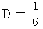
(a + 4m + b)에서 m이 의미하는 것은?- 낙관시간
- 비관시간
- 정상시간
- 천재지변시간
(정답률: 61%)
91. 다음의 단순보에 P2=서 A점의 반력이 B점의 반력의 3배가 되기 위한 거리 x는 얼마인가?
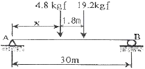
- 3.75m
- 5.04m
- 6.06m
- 6.66m
(정답률: 29%)
92. 네트워크 공정관리기법인 PERT 기법에 관한 설명으로 가장 적합한 것은?
- 작업(activity) 중심의 일정계산
- Dupont 사이에 플랜트 보전 사업, 경쟁력 강화를 위해 개발
- 결합점(node) 중심의 반복적이고 경험이 있는 건설사업
- 3점 추정시간에 의한 요소작업 시간추정
(정답률: 54%)
93. 옹벽의 안정에 관한 설명 중 옳은 것은?
- 옹벽은 미끄러짐에 대한 안정은 허용 지내력에 관게한다.
- 옹벽의 전도에 대한 안정은 토압과 자중에 관계한다.
- 옹벽의 침하에 대한 안정은 허용응력에 관계한다.
- 옹벽자체의 단면의 안정은 자중에 관계한다.
(정답률: 60%)
94. GPS를 이용한 위치결정에 사용되지 않는 것은?
- 차분법
- 후방교회법
- 최소제곱법
- 구면조화함수
(정답률: 34%)
95. 다음 [보기]가 설명하는 것은?
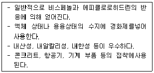
- 에폭시계 접착제
- 멜라민계 접착계
- 실리콘계 접착제
- 페놀계 접착제
(정답률: 54%)
96. 지면에 기계를 두고 깊이 8m 정도의 연약한 지반의 깊은 기초 흙파기를 할 때 사용하는 기계로 가장 적당한 것은?
- 스크래이퍼(scraper)
- 불도저(bull dozer)
- 파워쇼벨(power shovel)
- 드래그라인(drag line)
(정답률: 47%)
97. 수밀 콘크리트의 시공에 대한 설명으로 틀린것은?
- 소요품질을 갖는 수밀 콘크리트를 얻기 위해서는 적당한 간격으로 시공이음을 두어야 하며, 그 이음부의 수밀성에 대하여 특히 주의하여야 한다.
- 콘크리트는 가능한 연속으로 타설하여 콜드조인트가 발생하지 않도록 하여야 한다.
- 연속타설 시간 간격은 외기온도가 25℃ 이하일 경우에는 1.5 시간을 넘어서는 안 된다.
- 연직 시공이음에는 지수판 등 물의 통과 흐름을 차단할 수 있는 방수처리재 등의 재료 및 도구를 사용하는 것을 원칙으로 한다.
(정답률: 61%)
98. 적산할 경우 수량의 계산 기준으로 옳지 않은 것은?
- 절토(切土)량은 자연상태의 설계도의 양으로 한다.
- 성토 및 사석공의 준공토량은 성토 및 사석공 설계도의 양으로 한다. 그러나 지반침하량은 지반성질에 따라 가산을 할 수 있다.
- 면적의 계산은 보통 수학공식에 의하는 외에 삼사법(三斜法)이나 플래니미터로 한다.
- 수량의 계산은 지정 소수위 이하 1위까지 구하고, 끝수는 버림한다.
(정답률: 56%)
99. 다음 중 공사 원가계산 항목 중 직접경비에 해당하지 않는 것은?
- 폐기물처리비
- 도서인쇄비
- 가설비
- 운반비
(정답률: 65%)
100. 변재와 심재에 대한 설명으로 틀린 것은?
- 수심에 가까운 부위가 변재이다.
- 심재보다 변재가 내후성이 작다.
- 일반적으로 심재는 변재에 비해 강도가 강하다.
- 변재는 심재보다 비중이 적으나 건조하면 변하지 않는다.
(정답률: 63%)
6과목: 조경관리론
101. 농약의 안전성평가 기준에 해당되지 않는 것은?
- 열량
- 질적 위해성
- 잔류허용기준
- 1일 섭취허용량
(정답률: 60%)
102. 공사현장의 안전대책으로 가장 거리가 먼 것은?
- 작업장 내는 관계자 이외의 사람이 출입하지 못하도록 방지책 등으로 봉쇄한다.
- 공사용 차량출입구는 표지판을 설치하고 필요에 따라 교통 유도원을 배치한다.
- 휴일 및 작업이 행해지지 않을 때에는 작업장 출입구를 완전히 봉쇄한다.
- 작업장 주위의 조명설비는 야간에 꺼두어 불필요한 전기 소모를 막는다.
(정답률: 75%)
103. 어떤 약제 50% 유제를 1000배액으로 희석 하여 ha당 2000L를 살포하려고 할 때, ha당 원액 소요량(cc)은?
- 5000
- 2000
- 500
- 200
(정답률: 49%)
104. 파라치온 등 유기인계 살충제의 가장 큰 작용 특성은?
- 살충력이 강하고 광범위하게 사용된다.
- 분해가 느리기 때문에 약효지속 기간이 길다.
- 알칼리성 물질에 분해가 느린 편이다.
- 인축에 대해 독성이 약한 편이다.
(정답률: 45%)
1⑤. 일반적으로 성목을 이식한 직후 관리에서 가장 우선적으로 실시해야 되는 작업은?
- 시비와 관수
- 관수와 지주목 세우기
- 병해충 방제 및 시비
- 새끼감기와 멀칭
(정답률: 68%)
106. 조경관리에 있어서 운영관리에 해당하지 않는 것은?
- 재산관리
- 조직관리
- 예산관리
- 안전관리
(정답률: 51%)
107. 탄소와 화합한 질소화합물로서 물에 녹아 비교적 빨리 비효를 나타내지만 그 자체로는 유해하며 함유하는 비료로는 석회질소가 대표적인 질소 형태는?
- 시안아미드태 질소
- 암모니아태 질소
- 질산태 질소
- 요소태 질소
(정답률: 32%)
108. 점토광물이 형태상의 변화 없이, 내외부의 이온이 치환되어 점토광물 표면에 음전하를 갖게 하는 현상을 무엇이라 하는가?
- 동형치환
- 변두리 전하
- 장시적 전하
- pH의존전하
(정답률: 68%)
109. 해충에 대한 식물의 저항성 중 특히 해충의 생장이나 생존에 불리하게 작용하는 것은?
- 내성(tolerance)
- 항생성(antibiosis)
- 항접근성(antigenosis)
- 비선호성(nonpreference)
(정답률: 52%)
110. 잔디 뗏밥주기의 목적으로 가장 거리가 먼 것은?
- 잔디의 凹凸부분을 평탄하게 하여 잔디 깎기를 용이하게 한다.
- 잔디밭의 토양구조와 토성을 개량한다.
- 지하경과 토양의 분리를 막아 내한성을 증대시킨다.
- 잔디 뗏밥주기를 하여 병충해를 방제한다.
(정답률: 59%)
111. 콘크리트재 시설물의 균열을 줄이기 위한 대책으로 적당하지 않은 것은?
- 양생방법에 주의한다.
- 수축 이음부를 설치한다.
- 수화열이 높은 시멘트를 선택한다.
- 단위 시멘트량을 적게 한다.
(정답률: 45%)
112. 항생제 계통의 살균제인 Streptomycin에 대한 설명으로 옳은 것은?
- 저독성 약제로 세균성병 방제에 사용된다.
- 살균기작은 SH효소에 의한 핵산합성저해이다.
- 수화제와 액제가 등록되어 도열병 방제용으로 살포된다.
- 농용신 수화제는 Streptomycin이 80% 기타 증량제가 20%이다.
(정답률: 36%)
113. 소나무 잎마름병(Pseudocercospora)의 병징은?
- 봄에 잎 끝부분이 갈색으로 변한다.
- 봄에 산초와 잎이 시들고 구부러진다.
- 봄에 잎이 띠 모양의 황색반점이 생긴다.
- 봄에 잎 전체가 갑자기 갈색으로 변한다.
(정답률: 41%)
114. 다음 중 삽목(꺾꽂이) 발근과 가장 관계없는 인자는?
- 습도
- 온도
- 광선
- 극성
(정답률: 71%)
115. 다음 일반적인 수목의 가지치기 내용 중 옳지 않은 것은?
- 늘어지거나 가지끼리 교차되어 미관상 좋지 않은 가지는 반드시 가지치기를 해야한다.
- 가지치기는 낙엽 후부터 이른 봄 새싹이 트기 전에 실시하는 것을 원칙으로 하되, 상록활엽수는 절단면의 동해 방지를 위해 겨울철에는 실시하지 않는다.
- 당년에 나온 가지에 개화하는 수종은 일반적으로 여름에 가지치기를 실시한다.
- 가지 중간을 자를 때에는 잠아를 유도하기 위한 경우를 제외하고 일반적으로 발아 육성하고자 하는 눈 위에서 가지치기를 한다.
(정답률: 61%)
116. 부지관리에 있어서 이용자에 의해 생태적 악영향을 미치는 주된 원인으로 가장 거리가 먼 것은?
- 반달리즘(Vandalism)
- 요구도(Needs)
- 무지(Ignorance)
- 과밀이용(Over-Use)
(정답률: 64%)
117. 호두나무 옆에 다른 식물을 심으면 시들거나 죽는 현상을 무엇이라 하는가?
- 알레그라(allegra)
- 정균작용(fungistasis)
- 알렐로패씨(allelopathy)
- 이핵현상(heterokaryosis)
(정답률: 55%)
118. 목재에 사용되는 방부제의 성능 기준의 항목으로 가장 거리가 먼 것은?
- 휘산성
- 흡습성
- 철부식성
- 침투성
(정답률: 43%)
119. 자연공원지역에서 제반 관리적 상황의 파악을 위한 적정모니터링시스템이 갖춰야 할 사항에 해당하지 않는 것은?
- 영향을 유효 적절히 측정할 수 있는 지표의 설정
- 신뢰성 있고 민감한 측정의 기법 적용
- 고비용의 정확한 측정모델의 선정
- 측정 단위들의 합리적 위치 설정
(정답률: 73%)
120. 다음 중 식엽성 해충이 아닌 것은?
- 노랑쐐기나방
- 오리나무잎벌레
- 솔알락명나방
- 잣나무넓적잎벌
(정답률: 46%)